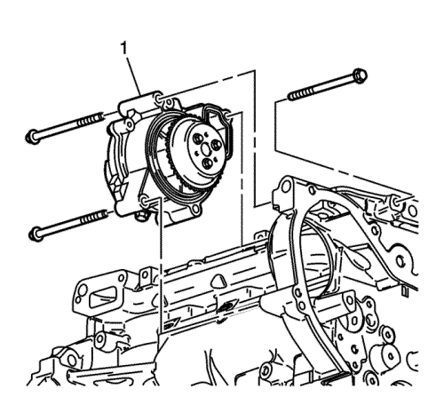
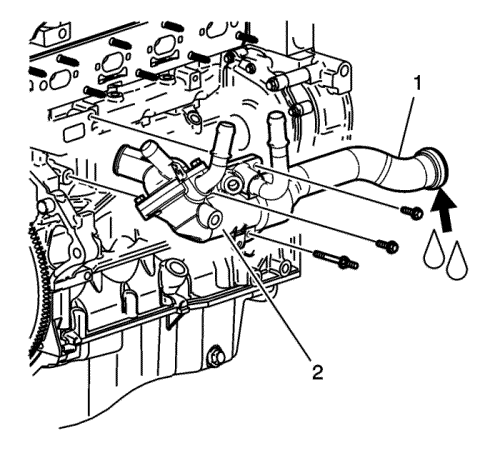
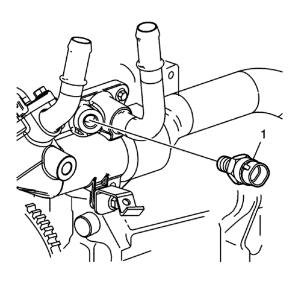

Montaje de la bomba de agua
Antes de montar la bomba de agua, leer la totalidad del procedimiento de reparación. Prestar la debida atención para evitar dañar las piezas y asegurarse de que se obtiene un sellado correcto.

- Coloque el conjunto de la bomba de agua (1).
- Colocar los tornillos de la bomba de agua. Asentar los tornillos a mano.
Precaución: Consulte Precaución con las fijaciones en la sección Prólogo
- Apriete los tornillos de la bomba de agua hasta 25 N·m (18 lib. pie).
- Aplicar sellador al tapón de drenaje de la bomba de agua. Consultar Adhesivos, líquidos, lubricantes y selladores .
- Monte el tapón de desagüe de la bomba de agua, si fuera necesario. Apriete a 20 N·m (15 lib. pie).

- Conectar el tubo de alimentación de agua (1).
- Lubricar la junta tórica del tubo de alimentación con anticongelante.
- Conectar el tubo de alimentación de agua girándolo y empujándolo hacia la bomba de agua. En el cuidado de no dañar o romper la junta tórica.
- Monte la carcasa del termostato (2) para bloquear los tornillos y el perno, y apriételos a 10 N·m (89 lib. pulg.).

- Monte manualmente el sensor de temperatura del refrigerante del motor (1).
- Apriete el sensor de temperatura del refrigerante del motor y apriételo a 20 N·m (15 lib. pie).
| © Copyright Chevrolet Europe. All rights reserved |